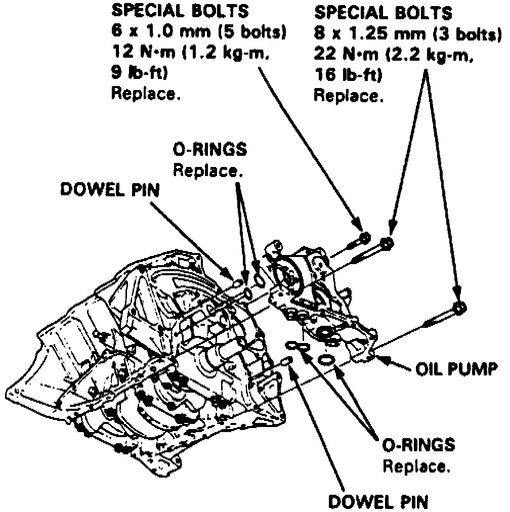

Oil Pump: Service and Repair
REMOVAL1. Drain engine and differential oil, then rotate crankshaft to No. 1 cylinder TDC and remove timing belt as described under Timing Belt.
2. Remove oil pan as outlined in Oil Pan, Engine.
3. Remove oil cooler or oil pump cap.
4. Remove oil pump attaching bolts, then the pump.
INSTALLATION
1. Ensure oil pump rotates freely.
2. Apply clean engine oil to seal lip, then install dowel pins and new O-ring on cylinder block.
3. Ensure mating surfaces are clean and dry, then apply suitable sealant to cylinder block mating surface.
Fig. 90 Oil Pump Replacement:

4. Apply suitable sealant to inner threads of bolt holes and to bolt threads, then install oil pump. Tighten attaching bolts to specifications, Fig. 90.
5. Install oil cooler or oil pump cap.
6. Install oil pan as outlined in Oil Pan, Engine.
7. Install timing belt as outlined under Timing Belt. Install driven pulley and all drive belts.
8. Allow at least 30 minutes after assembly, then fill engine and differential with correct oil.